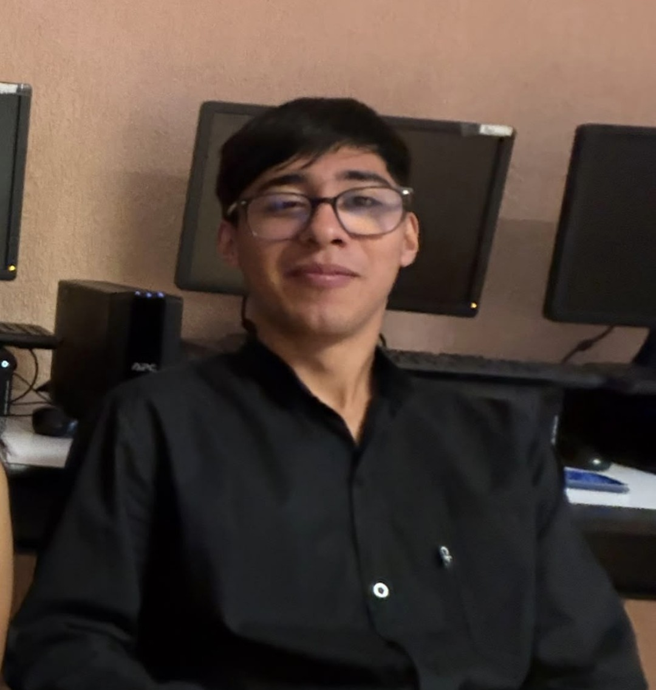

PERFIL2026

Alejandro Vargas Vega
Estudiante de Ingeniería en Desarrollo de Software
ESTUDIANTE● EN FORMACIÓN
PORTAFOLIO PERSONAL
Estudiante de Ingeniería en Desarrollo de Software y Gestión de Software, interesado en la tecnología, la programación y la creación de soluciones digitales.

Estudiante de Ingeniería en Desarrollo de Software
CONÓCEME
Una breve presentación de mi perfil académico y mis intereses profesionales.
Me interesa aprender, desarrollar habilidades tecnológicas y participar en proyectos que conviertan ideas en soluciones funcionales.
Actualmente continúo mi formación en el área del desarrollo de software. Durante mi preparación académica he fortalecido conocimientos relacionados con la programación y la creación de aplicaciones.
Mi objetivo es seguir creciendo profesionalmente, adquirir experiencia y aplicar mis conocimientos en proyectos reales.
MI PREPARACIÓN
Mi trayectoria dentro del área de desarrollo de software.
FORMACIÓN TÉCNICA
Universidad Tecnológica Fidel Velázquez.
FORMACIÓN UNIVERSITARIA
Décimo cuatrimestre · Universidad Tecnológica Fidel Velázquez.
CONOCIMIENTOS
Áreas relacionadas con mi preparación y desarrollo profesional.
Fundamentos de lógica y desarrollo de software.
Interés en la creación de sitios y aplicaciones web.
Análisis de necesidades y búsqueda de soluciones.
Interés por conocer herramientas y tecnologías nuevas.
TRABAJO ACADÉMICO
Un espacio para consultar mis repositorios y trabajos publicados.
REPOSITORIO PÚBLICO
Repositorio disponible en mi perfil de GitHub. Consulta su contenido y los archivos directamente en la plataforma.
PRÓXIMOS TRABAJOS
Esta sección podrá actualizarse con nuevas aplicaciones, prácticas y proyectos desarrollados durante mi formación.
CONTACTO
Puedes conocer más sobre mi actividad y mis repositorios a través de GitHub.